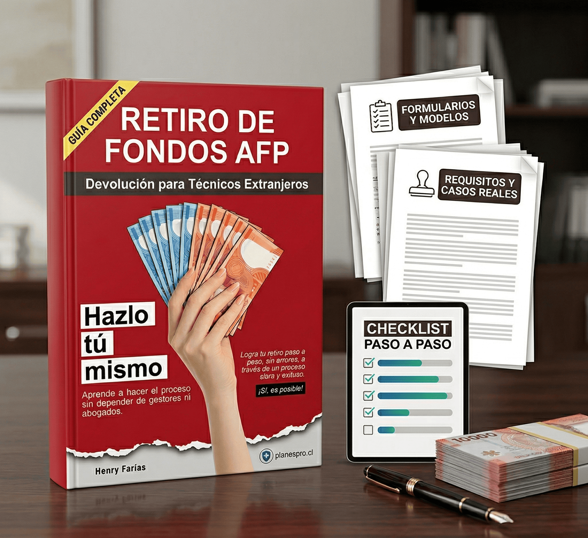

Reduce el costo oculto de depender de terceros para cada decisión.
Guía práctica para técnicos extranjeros
Retiro de Fondos AFP
Haz el proceso tú mismo, evita comisiones innecesarias y avanza con más claridad.
Una guía pensada para técnicos extranjeros que necesitan entender requisitos, ordenar documentos y reducir errores antes de pagar a terceros por un proceso que puede resolverse mejor con una ruta clara.
Evita pagar de más por asesorías que no necesitas
Entiende requisitos, documentos y pasos clave
Compra una guía pensada para ejecutar, no para rellenar
Cuando tengas la URL final de Hotmart, el CTA principal queda listo para compra directa.
Ordena el proceso con una lógica simple y accionable.
Entiende mejor el trámite y ejecuta con más confianza.
El problema
La mayorÃa pierde dinero antes de empezar, no al final.
Lo pierden en comisiones evitables, en pasos mal explicados, en tiempos muertos y en depender de personas que convierten la confusión en negocio.
Esta página no vende “informaciónâ€. Vende ahorro potencial, orden y capacidad de actuar con una guÃa diseñada para que el proceso deje de sentirse opaco.
La oportunidad
Hazlo tú mismo, pero mejor preparado
Con una ruta clara, checklists, requisitos y materiales de apoyo, la compra se transforma en una decisión racional: pagar una vez por claridad para dejar de pagar repetidamente por incertidumbre.
Qué incluye
Una guía creada para moverte del “no sé por dónde partir” al “sé exactamente qué hacer”.
- Explicación clara del proceso para retiro de fondos AFP enfocado en técnicos extranjeros.
- Checklist paso a paso para no omitir documentos ni avanzar con vacíos.
- Formularios y modelos como apoyo para ejecutar con más orden.
- Requisitos y casos reales para reducir dudas frecuentes y errores repetidos.

Tabla de contenido
Explora la estructura completa del e-book.
Abre cada sección para revisar los capítulos incluidos. El formato está organizado para que puedas entender rápidamente qué cubre la guía y cómo avanza el proceso.
- Prefacio
- Introducción
- Cómo usar esta guía
- Tabla de contenido
- Capítulo 1. En qué consiste este trámite
- Capítulo 2. Qué puedes lograr con este trámite
- Capítulo 3. Cuándo vale la pena hacerlo
- Capítulo 4. Mapa completo del proceso
- Capítulo 5. Mitos frecuentes antes de comenzar
- Capítulo 6. Diagnóstico inicial: si tu caso realmente califica
- Capítulo 7. Los requisitos estructurales del beneficio
- Capítulo 8. Errores que invalidan el caso desde el inicio
- Capítulo 9. Qué significa ser técnico o profesional extranjero para este trámite
- Capítulo 10. Cómo opera la Ley 18.156 en la práctica
- Capítulo 11. Cómo se construye un expediente sólido
- Capítulo 12. El título profesional o técnico
- Capítulo 13. El certificado previsional extranjero
- Capítulo 14. Identidad y acreditación personal
- Capítulo 15. Apostilla, legalización, traducción y trazabilidad documental
- Capítulo 16. Fechas, vigencia y coherencia cronológica
- Capítulo 17. El contrato de trabajo dentro del beneficio
- Capítulo 18. Casuística operativa del Contrato
- Capítulo 19. El anexo Ley 18.156: función, contenido y errores frecuentes
- Capítulo 20. Casos contractuales complejos y regularizaciones tardías
- Capítulo 21. Colombia
- Capítulo 22. Perú
- Capítulo 23. Venezuela
- Capítulo 24. ¿Estás en la AFP correcta para iniciar el trámite?
- Capítulo 25. Preparación final antes de ingresar la solicitud
- Capítulo 26. Cómo presentar el trámite ante la AFP
- Capítulo 27. Observaciones, rechazos y exigencias improcedentes
- Capítulo 28. Cuándo conviene escalar el caso
- Capítulo 29. Aprobación, pago y control del resultado
- Capítulo 30. Consecuencias y obligaciones después del retiro
- Capítulo 31. Impuestos: qué retención se aplica y por qué conviene entenderla
- Capítulo 32. Qué revisar al momento del pago
- Capítulo 33. Cierre documental y resguardo del expediente
- Capítulo 34. Fuentes y Referencias Normativas
- Apéndice 1. Checklist general del trámite
- Apéndice 2. Modelo de anexo de contrato
- Apéndice 6. Modelos y referencias de apoyo
- Cierre y canal de contacto
Clientes satisfechos
Personas que querían ahorrar, entender el proceso y dejar de depender de terceros.
“Yo estaba a punto de pagar una gestión completa porque no entendía por dónde partir. La guía me ayudó a ordenar papeles, entender el proceso y avanzar con mucha más seguridad.”
Matías R. Técnico extranjero en Santiago“Lo que más valoro es que va directo al punto. No sentí que estaba leyendo teoría, sino una guía para evitar errores y no regalar plata en comisiones innecesarias.”
Daniela C. Compradora del e-book“Tenía dudas con los requisitos y pensaba que sin ayuda profesional no podía hacerlo. El ebook me dio contexto, orden y confianza para resolver mucho más por mi cuenta.”
Kevin A. Técnico extranjero en Viña del Mar
Por qué comprar ahora
No estás pagando por páginas. Estás pagando por evitar errores caros.
Si hoy dependes de terceros
El ebook te ayuda a depender menos y a entender mejor cada paso antes de pagar otra comisión.
Si te frena la complejidad
La oferta baja la barrera de entrada con lenguaje claro, estructura y foco práctico.
Si quieres decidir con criterio
La compra tiene sentido cuando necesitas una guÃa que simplifique ejecución, no más ruido.
Compra una vez claridad. Evita seguir pagando por confusión.
La guÃa está pensada para convertir dudas en acción y ayudarte a avanzar con un proceso más ordenado, más simple y potencialmente más rentable para ti.
Comprar en Hotmart